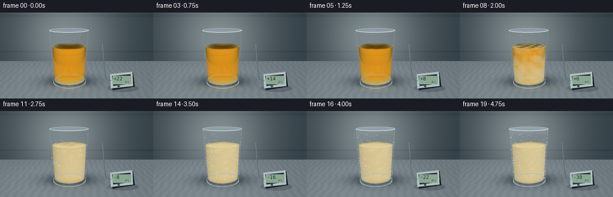
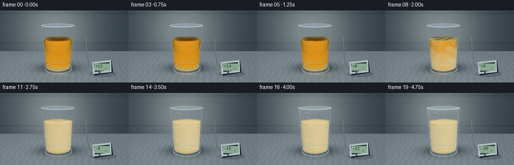
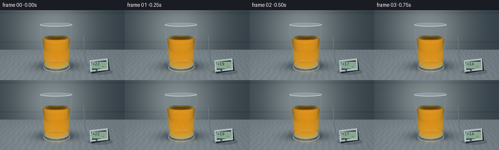

CODING AGENTS AS PIXEL WORLD MODELS
traex/GPT-6.1-Sol · phygen_094
点击播放 · 原生 RGB 像素
逐轮保存的候选
回放视频、检查图与代码变化。
每份候选均可单独播放。实际图片检查记录在下方工具轨迹中。
候选 01播放与检查图
点击播放 · 原生 RGB 像素

展开代码变化
--- 上一保存版本
+++ 本次保存版本
@@ -0,0 +1,283 @@
+"""Procedural, supersampled RGB timelapse. Only numpy/Pillow geometry and optics."""
+from pathlib import Path
+import json
+import numpy as np
+from PIL import Image, ImageDraw, ImageFont, ImageFilter
+import artifact_io
+
+ROOT = Path(__file__).resolve().parent
+SPEC = json.loads((ROOT / 'task_spec.json').read_text())
+W, H, S = SPEC['width'], SPEC['height'], 3
+w, h = W*S, H*S
+rng = np.random.default_rng(94)
+
+def unit(a):
+ return a / np.maximum(np.linalg.norm(a, axis=-1, keepdims=True), 1e-9)
+
+def smooth(a, b, x):
+ q = np.clip((x-a)/(b-a), 0, 1)
+ return q*q*(3-2*q)
+
+cam = np.array([0., 3.05, 7.1])
+target = np.array([0., 1.24, 0.])
+fwd = unit(target-cam)
+right = unit(np.cross(fwd, [0.,1.,0.]))
+up = np.cross(right, fwd)
+focal = (h/2)/np.tan(np.deg2rad(29)/2)
+Y, X = np.mgrid[:h,:w]
+rays = unit(fwd + ((X+.5-w/2)/focal)[...,None]*right - ((Y+.5-h/2)/focal)[...,None]*up)
+origin = np.broadcast_to(cam, rays.shape)
+CX = -.32
+GLASS_H = 2.35
+
+# The photographic set: a brushed, cool-grey counter and an unfocused back wall.
+def background(o,d):
+ tf = np.where(d[...,1]<-1e-6, -o[...,1]/np.minimum(d[...,1],-1e-6), 1e6)
+ tw = (-3.4-o[...,2])/np.minimum(d[...,2],-1e-6)
+ floor = (tf<tw)&(tf>0)
+ t = np.where(floor,tf,tw)
+ p = o+d*t[...,None]
+ x,y,z = p[...,0],p[...,1],p[...,2]
+ glow = np.exp(-((x+.7)/3.2)**2-((y-1.5)/3.2)**2)
+ wall = np.stack([.20+.31*glow,.245+.31*glow,.275+.29*glow],-1)
+ # Broad diffuse shelf seam, deliberately out of focus.
+ seam = np.exp(-((y-.63)/.055)**2)*.030 + np.exp(-((y-2.9)/.09)**2)*.025
+ wall -= seam[...,None]
+ table = np.stack([.42+0*x,.465+0*x,.49+0*x],-1)
+ table += (.013*np.sin(x*20+np.sin(z*6))+.003*np.sin(x*237+z*5))[...,None]
+ fall = .08*np.exp(-((x+.7)/3)**2-((z+.1)/4)**2)
+ table += fall[...,None]
+ shadow = np.exp(-((x-CX)/1.16)**2-((z+.12)/.75)**2)*.26
+ shadow += np.exp(-((x-CX)/.70)**2-((z)/.43)**2)*.15
+ table -= shadow[...,None]
+ return np.clip(np.where(floor[...,None],table,wall),0,1), p, floor
+
+bg, bgp, floor_mask = background(origin,rays)
+
+# Intersection with a truncated, slightly tapered cylinder plus optional end caps.
+def vessel_hit(o, d, rb, slope, low, high, caps=True):
+ q = o - np.array([CX,0.,0.])
+ rr = rb+slope*q[...,1]
+ A = d[...,0]**2+d[...,2]**2-(slope*d[...,1])**2
+ B = 2*(q[...,0]*d[...,0]+q[...,2]*d[...,2]-rr*slope*d[...,1])
+ C = q[...,0]**2+q[...,2]**2-rr**2
+ disc = B*B-4*A*C
+ sd = np.sqrt(np.maximum(disc,0))
+ ts = [(-B-sd)/(2*A),(-B+sd)/(2*A)]
+ best = np.full(d.shape[:-1], 1e6)
+ kind = np.zeros(d.shape[:-1], np.int8)
+ for t in ts:
+ yy = o[...,1]+d[...,1]*t
+ good=(disc>=0)&(t>1e-5)&(yy>=low)&(yy<=high)&(t<best)
+ best=np.where(good,t,best)
+ if caps:
+ for lev,k in ((low,-1),(high,1)):
+ t=(lev-o[...,1])/np.where(np.abs(d[...,1])<1e-10,1e-10,d[...,1])
+ p=o+d*t[...,None]
+ good=(t>1e-5)&((p[...,0]-CX)**2+p[...,2]**2<=(rb+slope*lev)**2)&(t<best)
+ best=np.where(good,t,best)
+ kind=np.where(good,k,kind)
+ hit=best<1e5
+ pos=o+d*np.where(hit,best,0)[...,None]
+ normal=unit(np.stack([pos[...,0]-CX,-slope*(rb+slope*pos[...,1]),pos[...,2]],-1))
+ normal=np.where((kind!=0)[...,None], np.stack([np.zeros_like(best),kind,np.zeros_like(best)],-1),normal)
+ return best,pos,normal,hit,kind
+
+outer_r=.73
+outer_s=.09/GLASS_H
+inner_r=.668
+inner_s=.091/GLASS_H
+OIL_H=1.67
+_,gp,gn,glass_mask,gkind=vessel_hit(origin,rays,outer_r,outer_s,0,GLASS_H,False)
+_,op,on,oil_mask,okind=vessel_hit(origin,rays,inner_r,inner_s,.135,OIL_H,True)
+
+def refract(d,n,eta):
+ cos=-np.sum(d*n,axis=-1)
+ k=1-eta*eta*(1-cos*cos)
+ result=eta*d+(eta*cos-np.sqrt(np.maximum(k,0)))[...,None]*n
+ refl=d-2*np.sum(d*n,axis=-1)[...,None]*n
+ return unit(np.where((k>=0)[...,None],result,refl))
+
+# Fixed optical geometry, reused for all twenty frames.
+indices=np.where(oil_mask)
+do=rays[indices]; entry=op[indices]; normals=on[indices]
+inside=refract(do,normals,1/1.465)
+length,exitpos,exitnorm,hitexit,exitkind=vessel_hit(entry+inside*1e-4,inside,inner_r,inner_s,.135,OIL_H,True)
+length=np.clip(length,0,3)
+outdir=refract(inside,-exitnorm,1.465)
+transmitted,_,_=background(exitpos+outdir*1e-4,outdir)
+view=-do
+ndv=np.clip(np.sum(normals*view,axis=-1),0,1)
+# Colored absorption is responsible for the initially clear, golden oil.
+absorb=np.array([.14,.39,1.50])
+through=np.exp(-length[:,None]*absorb)
+clear=transmitted*through + np.array([.56,.29,.022])*(1-np.exp(-length[:,None]*.52))
+clear+=np.array([.22,.14,.015])*(np.maximum(normals[:,2],0)**.6)[:,None]
+
+# Heterogeneous nucleation: walls/bottom become cloudy before the center.
+# The 3D field is stationary, so crystals grow rather than flicker between frames.
+ns=14
+u=(np.arange(ns)+.5)/ns
+samples=entry[:,None,:]+inside[:,None,:]*(length[:,None,None]*u[None,:,None])
+sx,sy,sz=samples[...,0]-CX,samples[...,1],samples[...,2]
+noise=(np.sin(13*sx+3*sy+5*sz)*np.sin(8*sy-4*sz)+.52*np.sin(25*sz+17*sx-7*sy)+.3*np.cos(41*sx+22*sy+29*sz))/1.82
+rad=np.sqrt(sx*sx+sz*sz)/(inner_r+inner_s*sy)
+arrival=.27+.25*(1-np.clip(rad,0,1))+.17*sy/OIL_H+.11*noise
+micro=(np.sin(116*sx+39*sy+22*sz)*np.cos(76*sy-98*sz)+.5*np.sin(213*sx+140*sz))/1.5
+cloudtone=np.mean(noise,axis=1)
+grain=np.mean(micro,axis=1)
+
+light1=unit(np.array([-3.,4.8,4.8])-gp)
+light2=unit(np.array([4.5,3.1,2.8])-gp)
+half1=unit(light1-rays); half2=unit(light2-rays)
+nh1=np.clip(np.sum(gn*half1,axis=-1),0,1)
+nh2=np.clip(np.sum(gn*half2,axis=-1),0,1)
+grazing=np.clip(1-np.sum(gn*(-rays),axis=-1),0,1)
+fresnel=.038+.96*grazing**5
+reflection=np.stack([.22+.35*grazing,.28+.35*grazing,.31+.36*grazing],-1)
+reflection+=((nh1**105)*1.85+(nh2**135)*1.40)[...,None]
+reflection+=((nh1**14)*.12)[...,None]
+
+# For drawing real world arcs and microscopic deposits on the same stable glass.
+def project(points):
+ p=np.asarray(points)-cam
+ dep=p@fwd
+ return np.stack([w/2+focal*(p@right)/dep,h/2-focal*(p@up)/dep],-1)
+
+def arc(y,r,theta0,theta1,n=120):
+ a=np.linspace(theta0,theta1,n)
+ return project(np.stack([CX+r*np.sin(a),np.full(n,y),r*np.cos(a)],-1))
+
+def line(draw,pts,color,width):
+ draw.line([tuple(p) for p in pts],fill=color,width=max(1,int(width*S)),joint='curve')
+
+# Fixed condensation sites, and fine branching oil crystal nuclei.
+droplets=[]
+for j in range(74):
+ theta=rng.uniform(-1.35,1.35); yy=rng.uniform(.25,2.26)
+ rr=outer_r+outer_s*yy
+ p=project([CX+rr*np.sin(theta),yy,rr*np.cos(theta)])
+ droplets.append((p,rng.uniform(.20,.70)*S,rng.uniform(.21,.72)))
+crystals=[]
+for j in range(50):
+ theta=rng.uniform(-1.18,1.18); yy=rng.uniform(.20,1.62)
+ rr=(inner_r+inner_s*yy)*rng.uniform(.72,.99)
+ p=project([CX+rr*np.sin(theta),yy,rr*np.cos(theta)])
+ crystals.append((p,rng.uniform(.25,.64),rng.uniform(1.3,4.9)*S,rng.uniform(-np.pi,np.pi)))
+
+font_path='/usr/share/fonts/truetype/dejavu/DejaVuSansMono.ttf'
+font=ImageFont.truetype(font_path,8*S)
+smallfont=ImageFont.truetype(font_path,4*S)
+
+frames=[]
+for frame in range(SPEC['frames']):
+ progress=frame/(SPEC['frames']-1)
+ temp=22-52*progress
+ rgb=bg.copy()
+ # Light caustic on the table disappears as the oil loses transparency.
+ caustic=np.exp(-((bgp[...,0]-(CX+.04))/.68)**2-((bgp[...,2]-.67)/.27)**2)*floor_mask
+ rgb+=caustic[...,None]*np.array([.13,.086,.014])*(1-.87*smooth(.28,.83,progress))
+ solid=smooth(arrival-.07,arrival+.10,progress)
+ fraction=solid.mean(1)
+ optical=(solid**1.4).mean(1)*length*3.1
+ translucency=np.exp(-optical)
+ # Crystalline oil remains pale yellow: never turns into transparent water ice.
+ shade=.78+.17*np.maximum(normals[:,2],0)+.04*normals[:,0]
+ shade=np.where(okind[indices]==1,.99,shade)
+ cream=np.array([.93,.85,.63])[None,:]*shade[:,None]
+ cream+=(.021*cloudtone+.009*grain)[:,None]
+ body=clear*translucency[:,None]+cream*(1-translucency[:,None])
+ body+=(.009*grain*fraction)[:,None]
+ # A liquid meniscus is glossy early; its reflection becomes satin on chilling.
+ h1=unit(unit(np.array([-3.,5.,4.])-entry)+view)
+ spec=np.clip(np.sum(normals*h1,axis=-1),0,1)**90
+ body+=spec[:,None]*.47*(1-.80*fraction[:,None])
+ rgb[indices]=body
+ # Thin transparent shell with two stable long softbox reflections.
+ effective=fresnel*.80+.035
+ shell=rgb*(1-effective[...,None])+reflection*effective[...,None]
+ shell+=((nh1**160)*.22+(nh2**170)*.17)[...,None]
+ rgb=np.where(glass_mask[...,None],shell,rgb)
+ # The chilled wall develops granular, faintly opaque frost after the oil clouds.
+ theta=np.arctan2(gp[...,0]-CX,gp[...,2])
+ frostnoise=(np.sin(theta*151+gp[...,1]*211)*np.sin(theta*73-gp[...,1]*139)+1)/2
+ cold=smooth(.53,.99,progress)
+ edge=np.clip((np.abs(np.sin(theta))-.40)/.55,0,1)
+ bottom=np.exp(-((gp[...,1]-.16)/.23)**2)
+ upper=np.exp(-((gp[...,1]-2.30)/.12)**2)
+ frost=cold*(.035+.23*edge+.19*bottom+.24*upper)*smooth(.35,.87,frostnoise)
+ frost*=glass_mask
+ rgb=rgb*(1-frost[...,None])+np.array([.85,.91,.92])*frost[...,None]
+ image=Image.fromarray(np.uint8(np.clip(rgb,0,1)*255)).convert('RGBA')
+ layer=Image.new('RGBA',(w,h)); dr=ImageDraw.Draw(layer)
+ # Thick clear base and the open elliptical lip, back arcs first.
+ line(dr,arc(.045,.724,np.pi/2,3*np.pi/2),(149,177,186,115),1.0)
+ line(dr,arc(.12,.674,0,2*np.pi),(179,194,194,105),.7)
+ line(dr,arc(.02,.729,-np.pi/2,np.pi/2),(213,225,225,155),1.3)
+ line(dr,arc(.07,.731,-1.2,1.25),(238,241,230,112),.5)
+ line(dr,arc(GLASS_H,.82,np.pi/2,3*np.pi/2),(208,219,222,162),.9)
+ line(dr,arc(GLASS_H-.035,.768,np.pi/2,3*np.pi/2),(95,120,131,151),.5)
+ line(dr,arc(GLASS_H,.82,-np.pi/2,np.pi/2),(229,237,238,214),1.2)
+ line(dr,arc(GLASS_H-.031,.767,-np.pi/2,np.pi/2),(136,163,170,143),.55)
+ # Oil surface contact line (the liquid level never changes).
+ meniscus_r=inner_r+inner_s*OIL_H
+ line(dr,arc(OIL_H,meniscus_r,np.pi/2,3*np.pi/2),(216,175,55,int(105*(1-fraction.mean()*.7))),.55)
+ line(dr,arc(OIL_H+.010,meniscus_r,-np.pi/2,np.pi/2),(255,235,155,int(119-35*progress)),.6)
+ # Small growth branches embedded in the oil; strongest while the cloud front passes.
+ crystal_layer=Image.new('RGBA',(w,h)); cd=ImageDraw.Draw(crystal_layer)
+ for p,born,size,angle in crystals:
+ growth=smooth(born,born+.25,progress)
+ opacity=int(93*growth*(1-.57*smooth(.72,1,progress)))
+ if opacity==0: continue
+ for k in range(4):
+ a=angle+k*np.pi/2
+ end=p+size*growth*np.array([np.cos(a),np.sin(a)])
+ cd.line([tuple(p),tuple(end)],fill=(253,240,189,opacity),width=1)
+ for f in (.40,.70):
+ start=p+(end-p)*f
+ for side in (-1,1):
+ aa=a+side*.7
+ ep=start+size*growth*.24*np.array([np.cos(aa),np.sin(aa)])
+ cd.line([tuple(start),tuple(ep)],fill=(252,239,191,int(opacity*.75)),width=1)
+ # Clip these inclusions to the visible liquid, not the empty upper glass.
+ al=np.asarray(crystal_layer.getchannel('A')).copy()
+ al[~oil_mask]=0
+ crystal_layer.putalpha(Image.fromarray(al))
+ image=Image.alpha_composite(image,crystal_layer)
+ for p,r,born in droplets:
+ a=smooth(born,born+.17,progress)
+ if a==0: continue
+ x,y=p; rr=r*(.70+.30*a)
+ dr.ellipse((x-rr,y-rr*1.2,x+rr,y+rr*1.2),fill=(143,170,183,int(24*a)),outline=(226,235,237,int(110*a)),width=1)
+ dr.arc((x-rr,y-rr,x+rr,y+rr),200,300,fill=(248,251,252,int(166*a)),width=1)
+ if cold>.15:
+ dr.line((x-rr*1.6,y,x+rr*1.6,y),fill=(236,244,245,int(95*cold)),width=1)
+ if cold>0:
+ for j in range(95):
+ a=-np.pi/2+j*np.pi/94
+ p=arc(GLASS_H,.817,a,a,1)[0]
+ rr=(.35+.45*(np.sin(j*17)**2))*S*cold
+ dr.line((p[0],p[1],p[0]+rr*.6*np.sin(j),p[1]-rr),fill=(237,246,247,int(130*cold)),width=1)
+ image=Image.alpha_composite(image,layer)
+ # A small physical temperature readout anchors the large drop in temperature.
+ device=Image.new('RGBA',(w,h)); dd=ImageDraw.Draw(device)
+ def poly(points,fill): dd.polygon([(int(x*S),int(y*S)) for x,y in points],fill=fill)
+ # The unit sits to the side and does not overlap the glass.
+ dd.ellipse((179*S,120*S,232*S,133*S),fill=(12,24,29,51))
+ poly([(184,104),(222,100),(225,124),(188,130)],(25,33,39,255))
+ poly([(184,103),(221,99),(222,123),(185,127)],(177,191,194,255))
+ poly([(187,106),(218,103),(219,119),(189,123)],(38,50,51,255))
+ dd.rounded_rectangle((188*S,106*S,219*S,120*S),radius=S,fill=(137,166,145,255))
+ txt=f'{temp:+.0f}'
+ dd.text((190*S,106*S),txt,font=font,fill=(29,51,42,255))
+ dd.text((209*S,114*S),'°C',font=smallfont,fill=(36,59,47,255))
+ dd.ellipse((196*S,122*S,200*S,125*S),fill=(63,78,83,255))
+ dd.line([(186*S,114*S),(177*S,112*S),(173*S,81*S)],fill=(84,104,113,255),width=S)
+ dd.line([(173*S,81*S),(171*S,53*S)],fill=(167,188,192,255),width=max(1,S//2))
+ image=Image.alpha_composite(image,device).convert('RGB')
+ # Downsampling is the only image filter; all details originate in this script.
+ image=image.resize((W,H),Image.Resampling.LANCZOS)
+ frames.append(np.asarray(image,dtype=np.uint8))
+
+artifact_io.save(np.stack(frames),ROOT)
+print(f'Saved {len(frames)} RGB frames at {W}x{H}.')
候选 02播放与检查图
点击播放 · 原生 RGB 像素


展开代码变化
--- 上一保存版本
+++ 本次保存版本
@@ -270,7 +270,7 @@
dd.rounded_rectangle((188*S,106*S,219*S,120*S),radius=S,fill=(137,166,145,255))
txt=f'{temp:+.0f}'
dd.text((190*S,106*S),txt,font=font,fill=(29,51,42,255))
- dd.text((209*S,114*S),'°C',font=smallfont,fill=(36,59,47,255))
+ dd.text((209*S,114*S),'\u00b0C',font=smallfont,fill=(36,59,47,255))
dd.ellipse((196*S,122*S,200*S,125*S),fill=(63,78,83,255))
dd.line([(186*S,114*S),(177*S,112*S),(173*S,81*S)],fill=(84,104,113,255),width=S)
dd.line([(173*S,81*S),(171*S,53*S)],fill=(167,188,192,255),width=max(1,S//2))
可观测工具轨迹
实际执行的命令与返回图片。
命令 1exit 0
/bin/bash -lc 'ls -la && cat prompt.txt && cat GENERATION_RULES.md && cat task_spec.json'
命令 2exit 0
/bin/bash -lc "cat artifact_io.py && python - <<'PY'
import numpy, PIL
print('numpy/PIL available')
PY"命令 3exit 0
/bin/bash -lc 'fc-list | head -5'
命令 4exit 0
/bin/bash -lc "cat > generate.py <<'PY'
\"\"\"Procedural, supersampled RGB timelapse. Only numpy/Pillow geometry and optics.\"\"\"
from pathlib import Path
import json
import numpy as np
from PIL import Image, ImageDraw, ImageFont, ImageFilter
import artifact_io
ROOT = Path(__file__).resolve().parent
SPEC = json.loads((ROOT / 'task_spec.json').read_text())
W, H, S = SPEC['width'], SPEC['height'], 3
w, h = W*S, H*S
rng = np.random.default_rng(94)
def unit(a):
return a / np.maximum(np.linalg.norm(a, axis=-1, keepdims=True), 1e-9)
def smooth(a, b, x):
q = np.clip((x-a)/(b-a), 0, 1)
return q*q*(3-2*q)
cam = np.array([0., 3.05, 7.1])
target = np.array([0., 1.24, 0.])
fwd = unit(target-cam)
right = unit(np.cross(fwd, [0.,1.,0.]))
up = np.cross(right, fwd)
focal = (h/2)/np.tan(np.deg2rad(29)/2)
Y, X = np.mgrid[:h,:w]
rays = unit(fwd + ((X+.5-w/2)/focal)[...,None]*right - ((Y+.5-h/2)/focal)[...,None]*up)
origin = np.broadcast_to(cam, rays.shape)
CX = -.32
GLASS_H = 2.35
# The photographic set: a brushed, cool-grey counter and an unfocused back wall.
def background(o,d):
tf = np.where(d[...,1]<-1e-6, -o[...,1]/np.minimum(d[...,1],-1e-6), 1e6)
tw = (-3.4-o[...,2])/np.minimum(d[...,2],-1e-6)
floor = (tf<tw)&(tf>0)
t = np.where(floor,tf,tw)
p = o+d*t[...,None]
x,y,z = p[...,0],p[...,1],p[...,2]
glow = np.exp(-((x+.7)/3.2)**2-((y-1.5)/3.2)**2)
wall = np.stack([.20+.31*glow,.245+.31*glow,.275+.29*glow],-1)
# Broad diffuse shelf seam, deliberately out of focus.
seam = np.exp(-((y-.63)/.055)**2)*.030 + np.exp(-((y-2.9)/.09)**2)*.025
wall -= seam[...,None]
table = np.stack([.42+0*x,.465+0*x,.49+0*x],-1)
table += (.013*np.sin(x*20+np.sin(z*6))+.003*np.sin(x*237+z*5))[...,None]
fall = .08*np.exp(-((x+.7)/3)**2-((z+.1)/4)**2)
table += fall[...,None]
shadow = np.exp(-((x-CX)/1.16)**2-((z+.12)/.75)**2)*.26
shadow += np.exp(-((x-CX)/.70)**2-((z)/.43)**2)*.15
table -= shadow[...,None]
return np.clip(np.where(floor[...,None],table,wall),0,1), p, floor
bg, bgp, floor_mask = background(origin,rays)
# Intersection with a truncated, slightly tapered cylinder plus optional end caps.
def vessel_hit(o, d, rb, slope, low, high, caps=True):
q = o - np.array([CX,0.,0.])
rr = rb+slope*q[...,1]
A = d[...,0]**2+d[...,2]**2-(slope*d[...,1])**2
B = 2*(q[...,0]*d[...,0]+q[...,2]*d[...,2]-rr*slope*d[...,1])
C = q[...,0]**2+q[...,2]**2-rr**2
disc = B*B-4*A*C
sd = np.sqrt(np.maximum(disc,0))
ts = [(-B-sd)/(2*A),(-B+sd)/(2*A)]
best = np.full(d.shape[:-1], 1e6)
kind = np.zeros(d.shape[:-1], np.int8)
for t in ts:
yy = o[...,1]+d[...,1]*t
good=(disc>=0)&(t>1e-5)&(yy>=low)&(yy<=high)&(t<best)
best=np.where(good,t,best)
if caps:
for lev,k in ((low,-1),(high,1)):
t=(lev-o[...,1])/np.where(np.abs(d[...,1])<1e-10,1e-10,d[...,1])
p=o+d*t[...,None]
good=(t>1e-5)&((p[...,0]-CX)**2+p[...,2]**2<=(rb+slope*lev)**2)&(t<best)
best=np.where(good,t,best)
kind=np.where(good,k,kind)
hit=best<1e5
pos=o+d*np.where(hit,best,0)[...,None]
normal=unit(np.stack([pos[...,0]-CX,-slope*(rb+slope*pos[...,1]),pos[...,2]],-1))
normal=np.where((kind"'!=0)[...,None], np.stack([np.zeros_like(best),kind,np.zeros_like(best)],-1),normal)
return best,pos,normal,hit,kind
outer_r=.73
outer_s=.09/GLASS_H
inner_r=.668
inner_s=.091/GLASS_H
OIL_H=1.67
_,gp,gn,glass_mask,gkind=vessel_hit(origin,rays,outer_r,outer_s,0,GLASS_H,False)
_,op,on,oil_mask,okind=vessel_hit(origin,rays,inner_r,inner_s,.135,OIL_H,True)
def refract(d,n,eta):
cos=-np.sum(d*n,axis=-1)
k=1-eta*eta*(1-cos*cos)
result=eta*d+(eta*cos-np.sqrt(np.maximum(k,0)))[...,None]*n
refl=d-2*np.sum(d*n,axis=-1)[...,None]*n
return unit(np.where((k>=0)[...,None],result,refl))
# Fixed optical geometry, reused for all twenty frames.
indices=np.where(oil_mask)
do=rays[indices]; entry=op[indices]; normals=on[indices]
inside=refract(do,normals,1/1.465)
length,exitpos,exitnorm,hitexit,exitkind=vessel_hit(entry+inside*1e-4,inside,inner_r,inner_s,.135,OIL_H,True)
length=np.clip(length,0,3)
outdir=refract(inside,-exitnorm,1.465)
transmitted,_,_=background(exitpos+outdir*1e-4,outdir)
view=-do
ndv=np.clip(np.sum(normals*view,axis=-1),0,1)
# Colored absorption is responsible for the initially clear, golden oil.
absorb=np.array([.14,.39,1.50])
through=np.exp(-length[:,None]*absorb)
clear=transmitted*through + np.array([.56,.29,.022])*(1-np.exp(-length[:,None]*.52))
clear+=np.array([.22,.14,.015])*(np.maximum(normals[:,2],0)**.6)[:,None]
# Heterogeneous nucleation: walls/bottom become cloudy before the center.
# The 3D field is stationary, so crystals grow rather than flicker between frames.
ns=14
u=(np.arange(ns)+.5)/ns
samples=entry[:,None,:]+inside[:,None,:]*(length[:,None,None]*u[None,:,None])
sx,sy,sz=samples[...,0]-CX,samples[...,1],samples[...,2]
noise=(np.sin(13*sx+3*sy+5*sz)*np.sin(8*sy-4*sz)+.52*np.sin(25*sz+17*sx-7*sy)+.3*np.cos(41*sx+22*sy+29*sz))/1.82
rad=np.sqrt(sx*sx+sz*sz)/(inner_r+inner_s*sy)
arrival=.27+.25*(1-np.clip(rad,0,1))+.17*sy/OIL_H+.11*noise
micro=(np.sin(116*sx+39*sy+22*sz)*np.cos(76*sy-98*sz)+.5*np.sin(213*sx+140*sz))/1.5
cloudtone=np.mean(noise,axis=1)
grain=np.mean(micro,axis=1)
light1=unit(np.array([-3.,4.8,4.8])-gp)
light2=unit(np.array([4.5,3.1,2.8])-gp)
half1=unit(light1-rays); half2=unit(light2-rays)
nh1=np.clip(np.sum(gn*half1,axis=-1),0,1)
nh2=np.clip(np.sum(gn*half2,axis=-1),0,1)
grazing=np.clip(1-np.sum(gn*(-rays),axis=-1),0,1)
fresnel=.038+.96*grazing**5
reflection=np.stack([.22+.35*grazing,.28+.35*grazing,.31+.36*grazing],-1)
reflection+=((nh1**105)*1.85+(nh2**135)*1.40)[...,None]
reflection+=((nh1**14)*.12)[...,None]
# For drawing real world arcs and microscopic deposits on the same stable glass.
def project(points):
p=np.asarray(points)-cam
dep=p@fwd
return np.stack([w/2+focal*(p@right)/dep,h/2-focal*(p@up)/dep],-1)
def arc(y,r,theta0,theta1,n=120):
a=np.linspace(theta0,theta1,n)
return project(np.stack([CX+r*np.sin(a),np.full(n,y),r*np.cos(a)],-1))
def line(draw,pts,color,width):
draw.line([tuple(p) for p in pts],fill=color,width=max(1,int(width*S)),joint='"'curve')
# Fixed condensation sites, and fine branching oil crystal nuclei.
droplets=[]
for j in range(74):
theta=rng.uniform(-1.35,1.35); yy=rng.uniform(.25,2.26)
rr=outer_r+outer_s*yy
p=project([CX+rr*np.sin(theta),yy,rr*np.cos(theta)])
droplets.append((p,rng.uniform(.20,.70)*S,rng.uniform(.21,.72)))
crystals=[]
for j in range(50):
theta=rng.uniform(-1.18,1.18); yy=rng.uniform(.20,1.62)
rr=(inner_r+inner_s*yy)*rng.uniform(.72,.99)
p=project([CX+rr*np.sin(theta),yy,rr*np.cos(theta)])
crystals.append((p,rng.uniform(.25,.64),rng.uniform(1.3,4.9)*S,rng.uniform(-np.pi,np.pi)))
font_path='/usr/share/fonts/truetype/dejavu/DejaVuSansMono.ttf'
font=ImageFont.truetype(font_path,8*S)
smallfont=ImageFont.truetype(font_path,4*S)
frames=[]
for frame in range(SPEC['frames']):
progress=frame/(SPEC['frames']-1)
temp=22-52*progress
rgb=bg.copy()
# Light caustic on the table disappears as the oil loses transparency.
caustic=np.exp(-((bgp[...,0]-(CX+.04))/.68)**2-((bgp[...,2]-.67)/.27)**2)*floor_mask
rgb+=caustic[...,None]*np.array([.13,.086,.014])*(1-.87*smooth(.28,.83,progress))
solid=smooth(arrival-.07,arrival+.10,progress)
fraction=solid.mean(1)
optical=(solid**1.4).mean(1)*length*3.1
translucency=np.exp(-optical)
# Crystalline oil remains pale yellow: never turns into transparent water ice.
shade=.78+.17*np.maximum(normals[:,2],0)+.04*normals[:,0]
shade=np.where(okind[indices]==1,.99,shade)
cream=np.array([.93,.85,.63])[None,:]*shade[:,None]
cream+=(.021*cloudtone+.009*grain)[:,None]
body=clear*translucency[:,None]+cream*(1-translucency[:,None])
body+=(.009*grain*fraction)[:,None]
# A liquid meniscus is glossy early; its reflection becomes satin on chilling.
h1=unit(unit(np.array([-3.,5.,4.])-entry)+view)
spec=np.clip(np.sum(normals*h1,axis=-1),0,1)**90
body+=spec[:,None]*.47*(1-.80*fraction[:,None])
rgb[indices]=body
# Thin transparent shell with two stable long softbox reflections.
effective=fresnel*.80+.035
shell=rgb*(1-effective[...,None])+reflection*effective[...,None]
shell+=((nh1**160)*.22+(nh2**170)*.17)[...,None]
rgb=np.where(glass_mask[...,None],shell,rgb)
# The chilled wall develops granular, faintly opaque frost after the oil clouds.
theta=np.arctan2(gp[...,0]-CX,gp[...,2])
frostnoise=(np.sin(theta*151+gp[...,1]*211)*np.sin(theta*73-gp[...,1]*139)+1)/2
cold=smooth(.53,.99,progress)
edge=np.clip((np.abs(np.sin(theta))-.40)/.55,0,1)
bottom=np.exp(-((gp[...,1]-.16)/.23)**2)
upper=np.exp(-((gp[...,1]-2.30)/.12)**2)
frost=cold*(.035+.23*edge+.19*bottom+.24*upper)*smooth(.35,.87,frostnoise)
frost*=glass_mask
rgb=rgb*(1-frost[...,None])+np.array([.85,.91,.92])*frost[...,None]
image=Image.fromarray(np.uint8(np.clip(rgb,0,1)*255)).convert('RGBA')
layer=Image.new('RGBA',(w,h)); dr=ImageDraw.Draw(layer)
# Thick clear base and the open elliptical lip, back arcs first.
line(dr,arc(.045,.724,np.pi/2,3*np.pi/2),(149,177,186,115),1.0)
line(dr,arc(.12,.674,0,2*np.pi),(179,194,194,105),.7)
line(dr,arc(.02,.729,-np.pi/2,np.pi/2),(213,225,225,155),1.3)
line(dr,arc(.07,.731,-1.2,1.25),(238,241,230,112),.5)
line(dr,arc(GLASS_H,.82,np.pi/2,3*np.pi/2),(208,219,222,162),.9)
line(dr,arc(GLASS_H-.035,.768,np.pi/2,3*np.pi/2),(95,120,131,151),.5)
line(dr,arc(GLASS_H,.82,-np.pi/2,np.pi/2),(229,237,238,214),1.2)
line(dr,arc(GLASS_H-.031,.767,-np.pi/2,np.pi/2),(136,163,170,143),.55)
# Oil surface contact line (the liquid level never changes).
meniscus_r=inner_r+inner_s*OIL_H
line(dr,arc(OIL_H,meniscus_r,np.pi/2,3*np.pi/2),(216,175,55,int(105*(1-fraction.mean()*.7))),.55)
line(dr,arc(OIL_H+.010,meniscus_r,-np.pi/2,np.pi/2),(255,235,155,int(119-35*progress)),.6)
# Small growth branches embedded in the oil; strongest while the cloud front passes.
crystal_layer=Image.new('RGBA',(w,h)); cd=ImageDraw.Draw(crystal_layer)
for p,born,size,angle in crystals:
growth=smooth(born,born+.25,progress)
opacity=int(93*growth*(1-.57*smooth(.72,1,progress)))
if opacity==0: continue
for k in range(4):
a=angle+k*np.pi/2
end=p+size*growth*np.array([np.cos(a),np.sin(a)])
cd.line([tuple(p),tuple(end)],fill=(253,240,189,opacity),width=1)
for f in (.40,.70):
start=p+(end-p)*f
for side in (-1,1):
aa=a+side*.7
ep=start+size*growth*.24*np.array([np.cos(aa),np.sin(aa)])
cd.line([tuple(start),tuple(ep)],fill=(252,239,191,int(opacity*.75)),width=1)
# Clip these inclusions to the visible liquid, not the empty upper glass.
al=np.asarray(crystal_layer.getchannel('A')).copy()
al[~oil_mask]=0
crystal_layer.putalpha(Image.fromarray(al))
image=Image.alpha_composite(image,crystal_layer)
for p,r,born in droplets:
a=smooth(born,born+.17,progress)
if a==0: continue
x,y=p; rr=r*(.70+.30*a)
dr.ellipse((x-rr,y-rr*1.2,x+rr,y+rr*1.2),fill=(143,170,183,int(24*a)),outline=(226,235,237,int(110*a)),width=1)
dr.arc((x-rr,y-rr,x+rr,y+rr),200,300,fill=(248,251,252,int(166*a)),width=1)
if cold>.15:
dr.line((x-rr*1.6,y,x+rr*1.6,y),fill=(236,244,245,int(95*cold)),width=1)
if cold>0:
for j in range(95):
a=-np.pi/2+j*np.pi/94
p=arc(GLASS_H,.817,a,a,1)[0]
rr=(.35+.45*(np.sin(j*17)**2))*S*cold
dr.line((p[0],p[1],p[0]+rr*.6*np.sin(j),p[1]-rr),fill=(237,246,247,int(130*cold)),width=1)
image=Image.alpha_composite(image,layer)
# A small physical temperature readout anchors the large drop in temperature.
device=Image.new('RGBA',(w,h)); dd=ImageDraw.Draw(device)
def poly(points,fill): dd.polygon([(int(x*S),int(y*S)) for x,y in points],fill=fill)
# The unit sits to the side and does not overlap the glass.
dd.ellipse((179*S,120*S,232*S,133*S),fill=(12,24,29,51))
poly([(184,104),(222,100),(225,124),(188,130)],(25,33,39,255))
poly([(184,103),(221,99),(222,123),(185,127)],(177,191,194,255))
poly([(187,106),(218,103),(219,119),(189,123)],(38,50,51,255))
dd.rounded_rectangle((188*S,106*S,219*S,120*S),radius=S,fill=(137,166,145,255))
txt=f'{temp:+.0f}'
dd.text((190*S,106*S),txt,font=font,fill=(29,51,42,255))
dd.text((209*S,114*S),'°C',font=smallfont,fill=(36,59,47,255))
dd.ellipse((196*S,122*S,200*S,125*S),fill=(63,78,83,255))
dd.line([(186*S,114*S),(177*S,112*S),(173*S,81*S)],fill=(84,104,113,255),width=S)
dd.line([(173*S,81*S),(171*S,53*S)],fill=(167,188,192,255),width=max(1,S//2))
image=Image.alpha_composite(image,device).convert('RGB')
# Downsampling is the only image filter; all details originate in this script.
image=image.resize((W,H),Image.Resampling.LANCZOS)
frames.append(np.asarray(image,dtype=np.uint8))
artifact_io.save(np.stack(frames),ROOT)
print(f'Saved {len(frames)} RGB frames at {W}x{H}.')
PY
python generate.py"命令 5exit 0
/bin/bash -lc "python - <<'PY'
from pathlib import Path
p=Path('generate.py')
s=p.read_text().replace(\"'ðC'\", \"'°C'\")
p.write_text(s)
PY
command -v ffmpeg || true
ls -lh pixels.npz index.html frames/00.png frames/19.png
python - <<'PY'
import numpy as np
from PIL import Image
p=np.load('pixels.npz')['pixels']
print('Packed shape:',p.shape)
a=np.asarray(Image.open('frames/00.png'));b=np.asarray(Image.open('frames/19.png'))
print('Frame modes:',Image.open('frames/00.png').mode,Image.open('frames/19.png').mode)
print('Changed pixel fraction:',np.mean(np.any(a"'!=b,axis=2)))
for y in [30,60,90,110]:
print(y,'"'initial',a[y,105].tolist(),'final',b[y,105].tolist())
PY"命令 6exit 0
/bin/bash -lc "python - <<'PY'
from pathlib import Path
p=Path('generate.py');s=p.read_text()
for line in s.splitlines():
if '209*S' in line: print(repr(line))
s=s.replace(\"'ðC'\", \"'\\\\u00b0C'\")
p.write_text(s)
PY
python generate.py
python - <<'PY'
import numpy as np
from pathlib import Path
from PIL import Image
assert len(list(Path('frames').glob('*.png')))==20
for p in Path('frames').glob('*.png'):
im=Image.open(p)
assert im.size==(256,144) and im.mode=='RGB'
v=np.load('pixels.npz')['pixels']
assert v.shape==(144,256,20)
assert Path('index.html').is_file()
print('All video artifacts verified.')
PY"命令 7exit 0
/bin/bash -lc "python - <<'PY'
from pathlib import Path
p=Path('generate.py')
s=p.read_text().replace(\"'\\u00c2\\u00b0C'\", \"'\\\\u00b0C'\")
p.write_text(s)
PY
python generate.py"保存候选 2 份；完成命令 7 次；可验证图片返回 0 张。原始 API 响应与完整日志保留在本地。